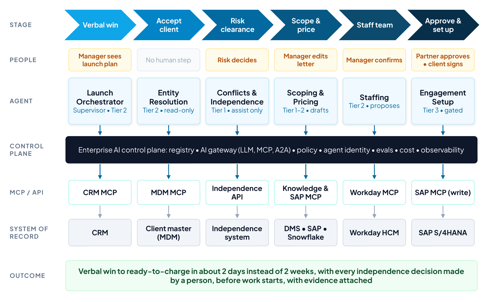
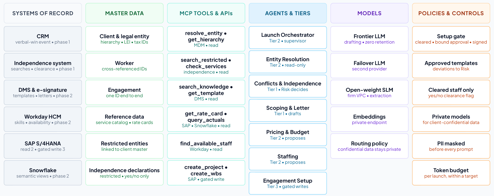
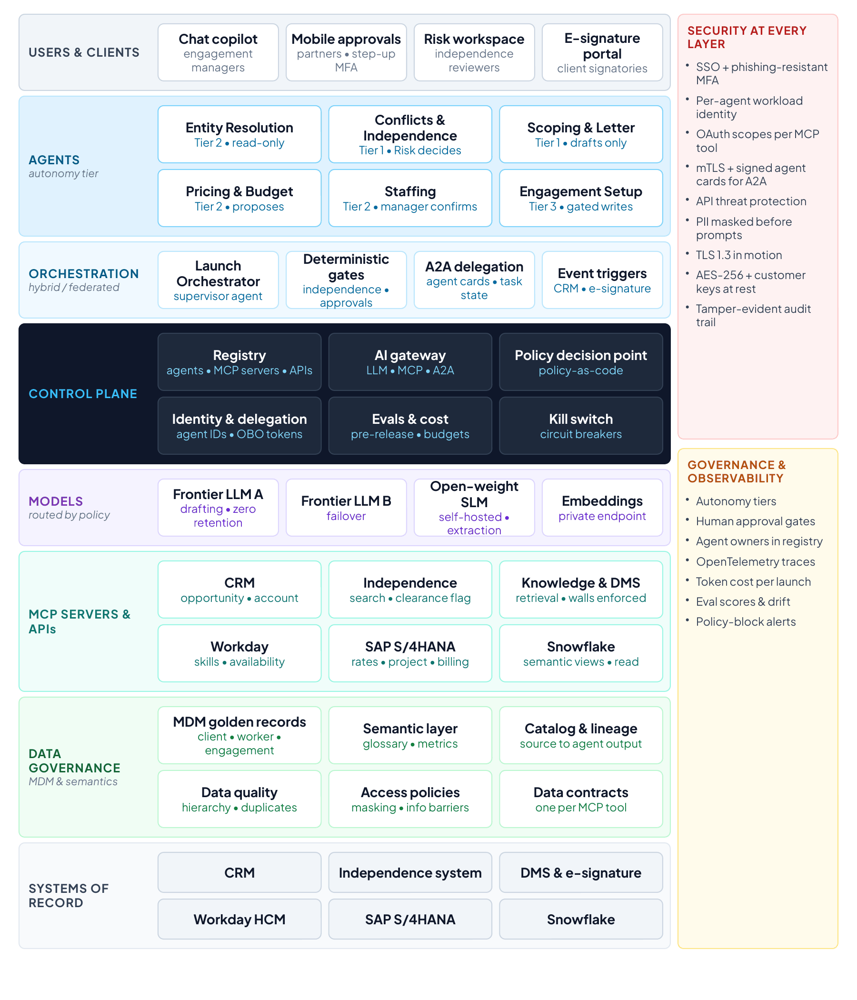
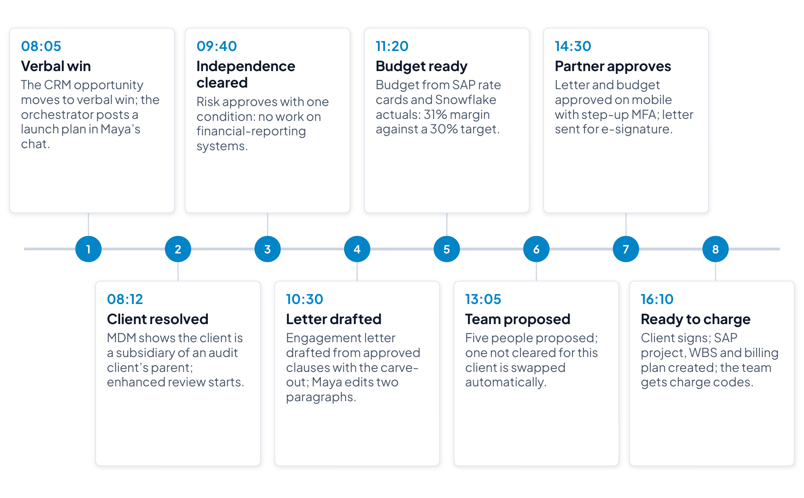
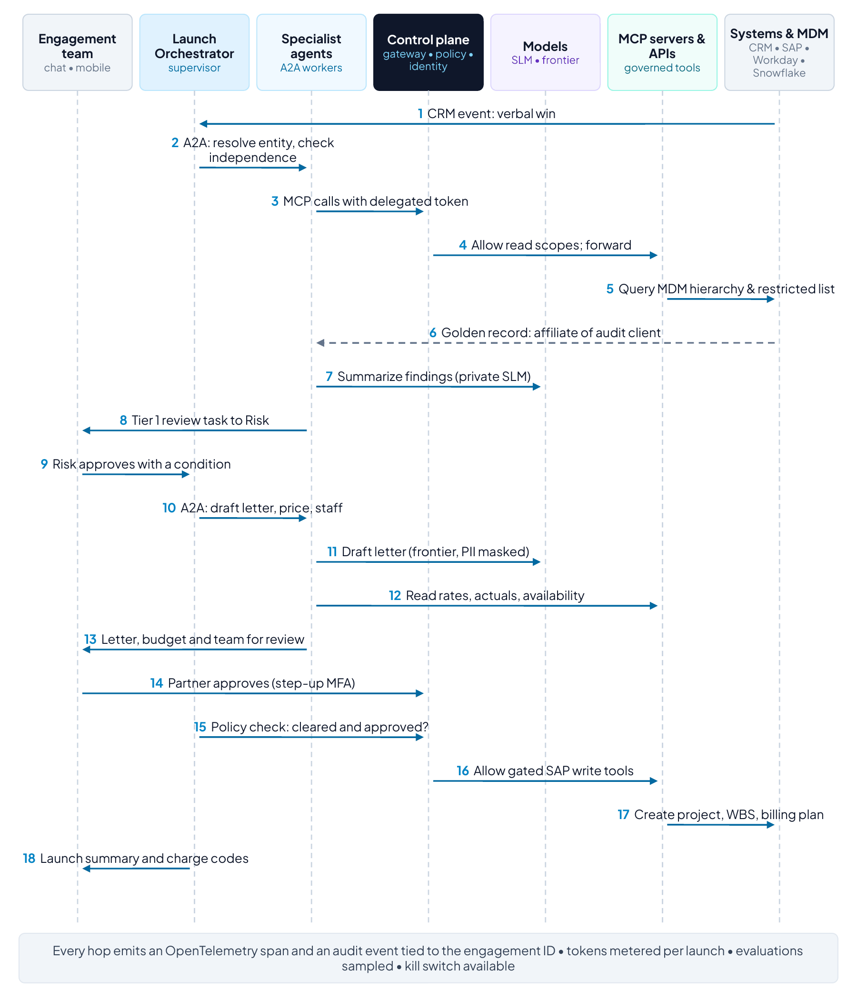
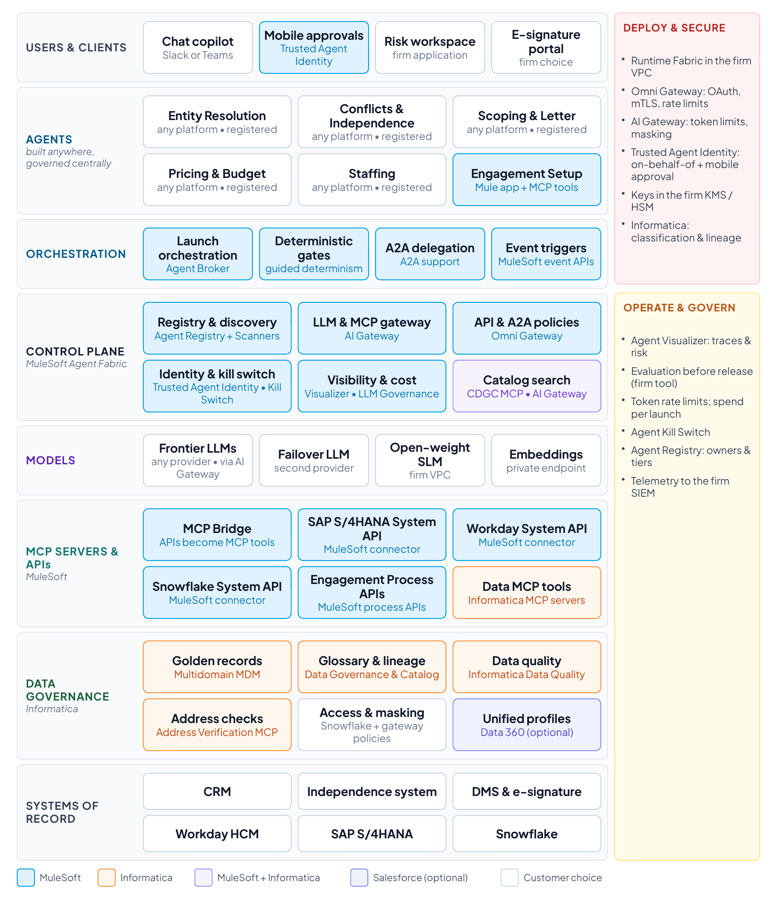
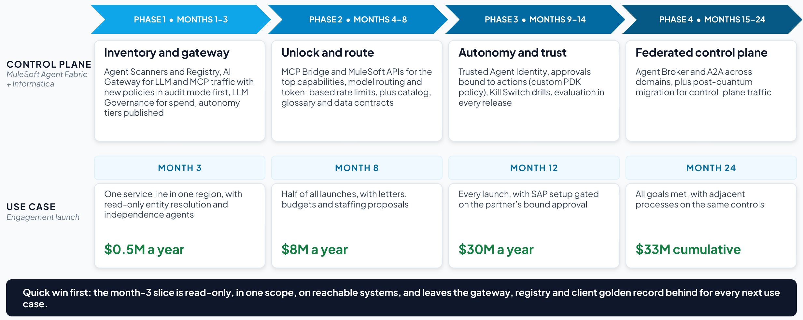
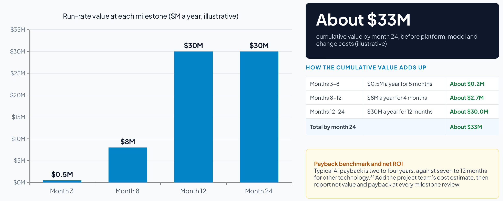

Section 8
Use case 1 with every template filled in
| Client | A global audit, tax and advisory firm (illustrative) |
| Use case | Engagement launch: from verbal win to ready-to-charge |
| Assessment | Five weeks, eight workshops (Appendix B) and a readout to the managing partner for operations and the leadership team (illustrative) |
| Volumes and rates | 10,000 engagement launches a year, $120 an hour loaded cost, $200 an hour average rate and 5,000 client-facing staff working 1,800 hours a year (illustrative) |
T1 filled: use case at a glance
| Use case | Engagement launch: from verbal win to ready-to-charge |
| Problem today | Between a verbal win and the first chargeable hour sits a chain of manual, risk-sensitive steps: resolving the legal entity, checking conflicts and auditor independence, drafting the letter, pricing, staffing, and creating the SAP project and billing plan. Each step lives in a different system and is owned by a different function, so the chain takes days to weeks. People wait on the bench, early work goes unbilled, and a missed affiliate can become an independence breach.89 |
| Target state | An Engagement Launch Orchestrator coordinates six specialist agents across the CRM, the independence system, document management, Workday, SAP S/4HANA and Snowflake. People keep every judgment that carries professional or regulatory accountability. Agents assemble, check, draft and update, and the control plane makes every step governed, observable and auditable. |
| Trigger | An opportunity reaches verbal win in the CRM |
| End state | Independence cleared and documented, engagement letter signed, team soft-booked, and the SAP project, WBS, billing plan and charge codes active |
| Users | Engagement managers and partners, Risk & Quality (independence reviewers), resource management and finance |
| Systems of record |
|
| Out of scope | Delivery of the engagement itself and invoicing after launch |
Stages
| Stage | Human step | Work mode | Agent and tier | System of record |
|---|---|---|---|---|
| Verbal win | Manager sees the launch plan | AI-led: planning and tracking | Launch Orchestrator (Tier 2) | CRM |
| Accept client | None | AI-led, read-only: matching to the golden record | Entity Resolution (Tier 2, read-only) | Client master (MDM) |
| Risk clearance | Risk decides | Human-led: independence is a regulated professional judgment | Conflicts & Independence (Tier 1) | Independence system |
| Scope and price | Manager edits the letter | AI-assisted: agents draft, and the manager edits and accepts | Scoping & Letter and Pricing & Budget (Tiers 1–2) |
|
| Staff team | Manager confirms | AI-assisted: the agent proposes and the manager confirms | Staffing (Tier 2) | Workday HCM |
| Approve and set up |
| Human-led approval, then AI-led setup under the bound approval | Engagement Setup (Tier 3, gated) | SAP S/4HANA |
Goals
| Goal | Type | Measured by |
|---|---|---|
| Faster time to revenue: verbal win to ready-to-charge in about two business days | Business | Win-to-ready-to-charge |
| Lower cost to launch: Risk, resourcing and finance work exceptions instead of re-keying data | Business | Manual effort per launch |
| No known independence exceptions at engagement start, with a complete evidence trail for inspections | Business |
|
| A better client experience (engagement letter the same day) and staff experience (clear assignments, fewer chasers) | Business | Staffing within 48 hours |
| Every model and tool call governed by one control plane, with AI cost per launch within its target | Control plane |
|
Selection scores
| Criterion | Score (1–5) | Evidence |
|---|---|---|
| Value at stake | 5 | 10,000 launches a year, with about $30M a year at stake (T2) |
| Visible pain | 5 | Partners and managers chase status, and early hours go unbilled |
| Reachable systems | 4 | SAP, Workday, Snowflake and the CRM have APIs, but the independence system needs a search API |
| Data readiness | 3 | Client hierarchy spread across three systems, with stewardship needed first |
| Safe first step | 5 | Entity resolution and independence can start read-only, with Risk deciding |
| Measurable in 90 days | 4 | Cycle time and effort can be measured in one service line |
| Sponsor and owner | 4 |
|
| Total (out of 35) | 30 | Strong first use case |

Why it is filled this way
The use case is named after its business outcome, from verbal win to ready-to-charge, so the sponsor recognizes the value in the title.
The out-of-scope row excludes delivering the engagement and invoicing afterwards, which keeps the first phase to the launch alone.
Every stage shows who keeps the decision. The use case is safe to start because independence, engagement terms and partner approval stay with people while agents assemble, check, draft and update.
Each stage has a work mode and, where it is human-led, the reason. Risk clearance stays human-led because independence is a regulated professional judgment: the should-AI answer is no, whatever a model could do.
Data readiness scores 3 out of 5 because the client hierarchy is spread across three systems. That gap puts the golden record into phase 1 without stopping the use case.
T2 filled: business case and value hypothesis
| Value lever | How the solution delivers it | Formula and inputs | Annual value (illustrative) | Confidence |
|---|---|---|---|---|
| Capacity released | Manual assembly, checking and data entry falls from about 14 to 5 hours per launch across managers, Risk, resourcing and finance | 10,000 launches × 9 hours × $120 loaded cost | About $10.8M a year | Medium |
| Revenue protected | Charge codes exist when work starts, so early hours are billed instead of written off | 2,500 affected launches × 20 hours × $200 average rate | About $10.0M a year | Medium |
| Utilization | Teams are confirmed within days instead of weeks, reducing bench time | 0.5 point × 5,000 client-facing staff × 1,800 hours × $200 | About $9.0M a year | Low |
| Risk avoided | Every independence decision is made by a person before work starts, with evidence and lineage attached | Avoided remediation, regulatory and reputational cost | Not quantified | Not applicable |
| Assumption | Value | Source | Agreed by |
|---|---|---|---|
| Engagement launches a year | 10,000 | CRM (illustrative) | Business owner |
| Loaded cost per hour | $120 | Finance (illustrative) | Finance partner |
| Average rate per hour | $200 | Finance (illustrative) | Finance partner |
| Launches starting before charge codes exist | About 2,500 a year, about 20 hours each | SAP and time records (illustrative) | Finance partner |
| Client-facing staff and hours |
| Workday (illustrative) | Talent |
| Run rate at full scale | About $30 million a year released or protected, before platform, model and change costs |
| Costs | To be estimated with the project team: platform, implementation, model usage and change |
| Expected business outcomes |
|
| Payback benchmark | Typical AI payback is two to four years.82 This plan releases value from month 3 and reaches the full run rate at month 12, so the payback month depends on the costs the project team will estimate. |
| Horizons | The read-only first slice is judged in months. The gated SAP setup, which acts in a system of record, is judged on the 12-month horizon. |
Why it is filled this way
Each lever has a formula that finance can check line by line. The inputs are labeled illustrative until the firm’s own baseline replaces them.
Utilization carries low confidence because it depends on how quickly freed time is re-staffed, which the firm will measure in phase 2.
Risk avoided is described without a price. The firm may have its own estimate of remediation and regulatory cost, and until that estimate is available, evidence and lineage are the value.
The benchmark row sets the case beside what finance will compare it with: the two to four years a typical AI use case takes to pay back.
T3 filled: asset inventory
The inventory below is illustrative. For each tool, the table shows whether it exists today or must be built, and the phase column shows when the plan needs it.

T3a. Applications and systems of record
| System | Owner | Role in the use case | Interfaces | Agent access | Phase |
|---|---|---|---|---|---|
| CRM | Sales operations |
|
| Read | 1 |
| Independence and conflicts system | Risk & Quality | Conflict and independence searches, restricted-entity list, clearance flag |
| Read (a person decides) | 1 |
| Master data hub | Data governance | Client, worker and engagement golden records with hierarchies |
| Read | 1 |
| Document management and e-signature |
|
|
|
| 2 |
| Workday HCM | Talent | Skills, certifications, availability | Workday API | Read | 2 |
| SAP S/4HANA | Finance |
| SAP APIs |
| 2–3 |
| Snowflake | Finance and data platform | Historical engagement economics through governed semantic views | Semantic views | Read | 2 |
| Collaboration tool (chat copilot) | IT | The engagement manager’s entry point, in Slack or Teams | Chat app | Channel only | 1 |
T3b. Data assets and master data
| Data asset | System of record | Golden record today? | Quality and risk notes | Sensitivity | Owner or steward |
|---|---|---|---|---|---|
| Client and legal-entity master | Master data hub, fed by the CRM, SAP and the independence system | To extend | A missed subsidiary is a missed conflict: hierarchy freshness, duplicate entities, missing LEI or tax IDs | Confidential | Risk & Quality data steward |
| Restricted-entity list | Independence system | Yes | Must link to the client master | Restricted | Risk & Quality |
| Worker master | Workday (system of record), cross-referenced in MDM | Partly | Worker IDs differ across the CRM, SAP and the independence system | Confidential (personal data) | Talent |
| Engagement master | Master data hub | New | One engagement ID for the opportunity, the independence case, the letter and the SAP project | Confidential | Finance |
| Reference data: service catalog, rate cards |
| Partly | Effective dates must be respected | Internal | Finance |
| Independence declarations | Independence system | Yes |
| Restricted | Risk & Quality |
| Templates, clauses and precedent | Document management and knowledge base | Not applicable |
| Confidential | Risk & Quality |
| Historical engagement economics | Snowflake semantic views | Not applicable | Shared metric definitions (realization, utilization) | Confidential | Finance |
T3c. Integrations, APIs, events and MCP tools
| Tool or interface | System | Operation | Scope | Exists or to build | Used by |
|---|---|---|---|---|---|
| Verbal-win event | CRM | Start the launch | Event | Exists | Launch Orchestrator |
| Master data hub | Match the client and return hierarchy and identifiers | Read | New MCP tools | Entity Resolution |
| Independence system | Conflict and independence searches | Read | To build | Conflicts & Independence |
| Document management and knowledge base | Precedent and approved templates | Read | To build | Scoping & Letter |
| create_document | Document management | Create the draft letter | Write (drafts only) | To build | Scoping & Letter |
| get_rate_card | SAP S/4HANA | Rate cards | Read | To build | Pricing & Budget |
| query_actuals | Snowflake | Historical actuals through a semantic view | Read | To build | Pricing & Budget |
| find_available_staff | Workday HCM | Skills, availability and location | Read | To build | Staffing |
| get_clearance_flag | Independence system | Yes or no clearance for a person and client | Read (yes or no only) | To build | Staffing |
| SAP S/4HANA | Project, WBS, billing plan and charge codes | Write, policy-gated | To build (phase 3) | Engagement Setup |
| Signature event | E-signature | Client signed | Event | Exists | Launch Orchestrator |
T3d. Agents
| Agent | Responsibility | Tier | Human role | Owner | Phase |
|---|---|---|---|---|---|
| Launch Orchestrator | Plans and tracks the launch, delegates tasks over A2A and enforces the regulated sequence | Tier 2 | Sees plan and status | Practice operations (proposed) | 1 |
| Entity Resolution | Matches the client to its MDM golden record and returns hierarchy and identifiers | Tier 2, read-only | None | Data governance (proposed) | 1 |
| Conflicts & Independence | Runs conflict and independence searches and assembles findings and precedent | Tier 1 | Risk decides | Risk & Quality | 1 |
| Scoping & Letter | Drafts scope and engagement letter from approved templates and clauses | Tier 1 |
| Risk & Quality (templates) | 2 |
| Pricing & Budget | Builds the budget from rate cards and historical actuals and checks margin | Tier 2 | Manager accepts | Finance (proposed) | 2 |
| Staffing | Proposes a team by skills, availability, location and independence clearance | Tier 2 | Manager confirms | Talent | 2 |
| Engagement Setup | Creates project, WBS, billing plan and charge codes | Tier 3, policy-gated | None (gated by policy) | Finance | 3 |
| Agent | Sponsor | Lifecycle stage | Next recertification | Retirement criteria |
|---|---|---|---|---|
| Launch Orchestrator | Head of practice operations | Register and onboard (phase 1) | Every six months | The launch process changes or a successor replaces it |
| Entity Resolution | Head of data governance | Register and onboard (phase 1) | Every six months | Precision below threshold for a quarter, or matching moves into MDM |
| Conflicts & Independence | Risk & Quality leader | Register and onboard (phase 1) | Quarterly (regulated work) | Independence rules change beyond its evaluation suite |
| Scoping & Letter | Risk & Quality leader (templates) | Propose (phase 2) | Quarterly | The clause library is replaced, or accuracy falls below threshold |
| Pricing & Budget | Finance partner | Propose (phase 2) | Every six months | The rate-card system is replaced |
| Staffing | Talent leader | Propose (phase 2) | Every six months | Workday matching covers the need |
| Engagement Setup | Finance partner | Propose (phase 3) | Quarterly (writes to SAP) | SAP setup is automated another way, or a failed binding check goes unexplained |
T3e. Models
| Model | Provider and hosting | Tasks | Data rules | Fallback |
|---|---|---|---|---|
| Frontier model (primary) | Provider under enterprise terms with zero data retention | Drafts engagement letters and summarizes complex findings |
| Second frontier provider |
| Frontier model (failover) | Second provider, same terms | Failover for drafting and summaries | As above | Not applicable |
| Open-weight small language model | Self-hosted in the firm’s VPC | Entity extraction, classification and personal-data detection | Client-confidential text never leaves the firm for routine tasks | Not applicable |
| Embedding model | Private endpoint | Indexes credentials, prior proposals and templates for retrieval | Indexes partitioned by client and engagement (information barriers) | Not applicable |
Routing policy. Client-confidential payloads go only to private models or approved regions. Drafting goes to the frontier model with personal data masked, and token budgets are set per launch.
T3f. Identities, users and channels
| Actor | Channel | Authentication | Authority and approvals |
|---|---|---|---|
| Engagement managers | Chat copilot | Single sign-on with phishing-resistant MFA | Edit letters, accept budgets, confirm teams |
| Partners | Mobile approval | Step-up authentication |
|
| Risk & Quality reviewers | Case workspace | Single sign-on with MFA | Decide independence (Tier 1) |
| Resource management and finance | Existing tools | Single sign-on with MFA | Work exceptions |
| Client signatories | E-signature portal | Portal authentication | Sign the engagement letter |
| Agents (seven) | None (machine actors) | A unique workload identity per agent instance91 |
|
T3g. Policies and controls
| Policy or control | Type | Enforced today | Target enforcement | Owner |
|---|---|---|---|---|
| Engagement setup in SAP requires independence status CLEARED, the partner’s approval bound to the exact setup request (expiring at the end of the business day) and a signed letter | Approval and gate | Manual checks |
|
|
| Engagement letters use approved templates, and any clause deviation routes to Risk & Quality | Content | Manual review | Template and clause checks in the Scoping & Letter agent | Risk & Quality |
| Staffing proposals include only people with independence clearance for the client and the required credentials | Authorization | Manual | Clearance flag (yes or no) checked by the Staffing agent |
|
| Client-confidential data is processed only by private models in approved regions | Data and routing | Not enforced | AI Gateway routing policy | CISO |
| Personal data is masked before prompts | Data | Not enforced | AI Gateway masking and PII detection | Privacy officer |
| Cost limit | Not measured |
|
|
| Information barriers between engagements | Data access | Partly (document permissions) |
| Risk & Quality |
| Governance | None |
| AI governance council |
| Auditor-independence rules89 | Regulatory | Manual evidence | Evidence and lineage attached to every decision | Risk & Quality |
T3h. Infrastructure, runtime and observability
| Component | Notes |
|---|---|
| Firm virtual private cloud | Gateways, MCP servers and the self-hosted model run inside the firm’s VPC where confidentiality requires |
| Private connectivity | Private links to SAP, Workday and Snowflake, with no public endpoints for systems of record |
| Keys and secrets |
|
| Transport |
|
| Observability | OpenTelemetry traces for every hop, tied to one engagement correlation ID, feeding the firm’s SIEM and an operations dashboard94 |
Why it is filled this way
The inventory counts six systems of record, seven agents, four models, fifteen MCP tools, four master data domains and nine policies. Those counts become the discovery slide, and every row has an owner.
The master data hub appears as a system even though the golden record is “to extend”: a missed subsidiary is a missed conflict, so the client master is on the critical path from phase 1.
Most policies are “manual” or “not enforced” today. That column makes the case for the control plane, which enforces the same rules at runtime in the gateway path.
Owners marked “proposed” are the lead architect’s suggestion for the firm to confirm. The handbook names Risk & Quality, Finance and Talent as owners of their agents.
Every agent also has a named sponsor and a recertification date. The independence and setup agents are recertified quarterly, because one supports regulated work and the other writes to SAP.
T4 filled: requirements register
| ID | Type | Requirement | Priority | KPI | Phase | Owner |
|---|---|---|---|---|---|---|
| BR-01 | Business | Cut verbal-win-to-ready-to-charge from 10 to 2 business days | Must | Win-to-ready-to-charge | 3 | Business owner |
| BR-02 | Business | Cut manual effort per launch from 14 to 5 hours | Must | Manual effort per launch | 1–3 | Business owner |
| BR-03 | Business | Every independence decision is made by a person before work starts, with evidence and lineage | Must | Independence cleared before start | 1 | Risk & Quality |
| FR-01 | Functional | On verbal win, create a launch plan with a correlation ID and show it to the engagement manager within a minute | Must | Win-to-ready-to-charge | 1 | Practice operations |
| FR-02 | Functional | Resolve the client to its golden record with the full hierarchy (ultimate parent, affiliates, subsidiaries) and identifiers | Must | Post-start exceptions | 1 | Data governance |
| FR-03 | Functional | Run conflict and independence searches and assemble findings and precedent for a reviewer to decide (Tier 1) | Must | Independence cleared before start | 1 | Risk & Quality |
| FR-04 | Functional | Draft the engagement letter from approved templates and clauses, and route any deviation to Risk & Quality | Must | Manual effort per launch | 2 | Risk & Quality |
| FR-05 | Functional | Build the budget from rate cards and historical actuals and check the margin against target | Should | Manual effort per launch | 2 | Finance |
| FR-06 | Functional | Propose a team by skills, availability, location and independence clearance | Must | Staffing within 48 hours | 2 | Talent |
| FR-07 | Functional | Create the SAP project, WBS, billing plan and charge codes only when independence is cleared, the partner has approved that exact request and the letter is signed | Must | First-time-right setup | 3 | Finance |
| DR-01 | Data | Maintain one golden record per legal entity with hierarchy, LEI and tax IDs, linked to the restricted-entity list, and monitor freshness and duplicates | Must | Post-start exceptions | 1 | Data governance |
| DR-02 | Data | Share one engagement ID across the opportunity, the independence case, the letter and the SAP project | Must | First-time-right setup | 1–3 | Finance |
| DR-03 | Data | Publish a glossary, shared metric definitions and a data contract for each MCP tool, and capture lineage from source to agent output | Should | Agent quality | 2 | Data governance |
| IR-01 | Integration | Expose each system of record as governed APIs and MCP tools with explicit read or write scopes | Must | Governed AI traffic | 1–3 | Enterprise architect |
| NFR-01 | Non-functional | Fail over the primary model to a second provider, and make every SAP write idempotent | Must | First-time-right setup | 2–3 | Platform owner |
| NFR-02 | Non-functional | Set a token budget per launch, keep AI cost per launch within its target, and attribute every model and tool call to the engagement and its cost center within a day | Must | AI cost per launch | 1–2 | Finance |
| SR-01 | Security |
| Must | Oversight coverage | 1 | CISO |
| SR-02 | Security | Process client-confidential data only on private models in approved regions, and mask personal data before prompts | Must | Governed AI traffic | 1 | CISO |
| SR-03 | Security | Bind the partner’s approval to the exact setup request and expire it at the end of the business day | Must | Oversight effectiveness | 3 |
|
| CR-01 | Compliance | Keep the evidence behind every independence decision for inspections, with retention aligned to professional-standards documentation requirements | Must | Independence cleared before start | 1 | Risk & Quality |
| OR-01 | Operational | Trace every hop with OpenTelemetry under one engagement correlation ID, and show cycle time, policy blocks, token cost and evaluation drift on one dashboard | Must | Governed AI traffic | 1 | Platform owner |
| OR-02 | Operational | Pass evaluation suites before promotion (letter-clause accuracy, independence-finding recall, entity-resolution precision), then score sampled production traces continuously | Must | Agent quality | 2 | AI governance council |
| OR-03 | Operational | Before the setup agent reaches tier 3, write and drill a takeover runbook: open launches move to the finance setup queue with their trace, pending approvals and data touched | Must | Time to contain | 3 | Finance |
Why it is filled this way
Every requirement names the KPI it moves and the phase in which it must be met, so phase 1 stays small: the gated SAP write (FR-07) and the bound approval (SR-03) are phase 3.
The data requirements (DR-01, DR-02) are Must and phase 1 because entity resolution and independence depend on them from the first slice.
The operational requirements treat evaluation as a lifecycle (OR-02) and make the takeover runbook a condition of tier 3 (OR-03). NFR-02 makes every model and tool call attributable to the engagement that caused it.
The register stops at 23 rows. It covers what shapes the architecture and the plan and leaves detailed user stories to delivery.
T5 filled: security and compliance requirements
Security follows zero-trust principles:90 every actor is authenticated, every call is authorized for the specific task, and nothing is trusted because of where it sits on the network.
| Layer | Requirement (controls) | Enforced by | Phase |
|---|---|---|---|
| Users |
|
| 1 |
| Agents |
| 1 | |
| A2A |
| 1–2 | |
| MCP |
|
| 1 |
| APIs |
| Omni Gateway policies78 | 1 |
| Models | Access only through the gateway, enterprise terms with zero data retention and no training on firm data, prompt-injection and jailbreak screening, personal data masked before prompts, and output validation93 | AI Gateway routing, masking and token-based rate limits | 1 |
| Data at rest |
|
| 1 |
| Data in motion |
|
| 1 |
| Audit |
|
| 1 |
Autonomy by agent
| Agent | Tier | Human role | Approval bound to | Limits and kill switch |
|---|---|---|---|---|
| Launch Orchestrator | Tier 2 | Sees plan and status | Not applicable |
|
| Entity Resolution | Tier 2, read-only | None | Not applicable | Read-only scopes |
| Conflicts & Independence | Tier 1 | Risk decides | The reviewer’s decision, signed and logged |
|
| Scoping & Letter | Tier 1 |
| The partner’s approval of the letter |
|
| Pricing & Budget | Tier 2 | Manager accepts | Not applicable | Read-only |
| Staffing | Tier 2 | Manager confirms | Not applicable | Clearance returned as yes or no only |
| Engagement Setup | Tier 3, policy-gated | None (gated by policy) | The partner’s approval of that exact setup request, expiring at the end of the business day |
|
Promotion and demotion
| Agent | Current tier | Evidence to promote | Demotion triggers |
|---|---|---|---|
| Engagement Setup | Tier 3, gated, from month 12 |
|
|
| Scoping & Letter | Tier 1, drafts only | Stays at tier 1: the partner approves every letter. Standard letters could move to tier 2 only after clause accuracy holds for two quarters and Risk & Quality agrees |
|
| Conflicts & Independence | Tier 1 by design | Not promoted: independence stays a human-led decision |
|
| Staffing | Tier 2, proposes | Stays at tier 2: managers confirm every team |
|
Human takeover
| Agent | Who takes over | Information handed over | Degraded mode and service level | Drills |
|---|---|---|---|---|
| Engagement Setup | Finance project-setup team | The launch trace, the partner’s bound approval, the setup request and any SAP objects already created | Manual SAP setup as today, within one business day | Before tier 3 goes live, then quarterly |
| Launch Orchestrator | Practice operations | The launch plan and status of every launch in flight | Managers follow the launch checklist by hand | Before phase 2, then twice a year |
| Staffing | Resource management | Proposed teams and their clearance flags (yes or no only) | Manual staffing as today | Twice a year |
Threat coverage
| OWASP agentic risk | What it looks like here | Controls in this design |
|---|---|---|
| ASI01 Agent Goal Hijack | Hidden instructions in client documents or precedent redirect a letter or a finding |
|
| ASI02 Tool Misuse | The setup agent creates the wrong SAP objects |
|
| ASI03 Identity & Privilege Abuse | An agent acts beyond the authority of the person it acts for |
|
| ASI04 Agentic Supply Chain Vulnerabilities | A poisoned or changed MCP server enters the launch path |
|
| ASI05 Unexpected Code Execution | A drafting request triggers code or commands | No code or shell tools for any launch agent |
| ASI06 Memory & Context Poisoning | Wrong entity data leads to a missed conflict |
|
| ASI07 Insecure Inter-Agent Communication | A spoofed agent asks the orchestrator for independence findings |
|
| ASI08 Cascading Failures | A bad hierarchy update spreads to every launch that day |
|
| ASI09 Human-Agent Trust Exploitation | A polished summary leads a reviewer or partner to approve without reading |
|
| ASI10 Rogue Agents | An unregistered agent calls SAP or the independence system |
|
Compliance and evidence
| Obligation | Evidence required | Where it is produced | Owner |
|---|---|---|---|
| Auditor-independence rules89 | Independence cleared before work starts, with the findings and the reviewer’s decision |
| Risk & Quality |
| Professional-standards documentation | Retained evidence for inspections |
| Risk & Quality |
| Data protection |
|
| Privacy officer |
| AI governance standards the firm reports against (ISO/IEC 42001; NIST AI RMF)72,73 | Inventory, risk tiers, impact assessments, evaluation and monitoring records | Agent Registry, evaluation records and audit logs (handbook Appendix C maps the controls) | AI governance council |
Why it is filled this way
Only one agent writes to a system of record, and only under three conditions: independence cleared, the partner’s bound approval and a signed letter. Every other agent reads, drafts or proposes.
Under data minimization, the staffing agent sees a yes or no clearance flag and never the personal financial interests behind it, which keeps sensitive data where it belongs.
Most controls are phase 1 because security starts on day one, while autonomy is phased in later.
The setup agent earns tier 3 on evidence: a quarter of proposed setups that match the partners’ approvals. It drops back automatically if a binding check fails or independence status changes, and finance can take over its open launches within a business day.
The threat table shows coverage and the two gaps that need named owners: what enters the registry (the platform team) and what reviewers are shown (Risk & Quality).
T6 filled: KPIs and scorecard
| KPI | Definition | Data source | Owner |
|---|---|---|---|
| Win-to-ready-to-charge | Business days from verbal win to active charge codes | CRM and SAP timestamps | Business owner |
| Manual effort per launch | Hours across all roles to launch one engagement |
| Business owner |
| Independence cleared before start | Share of engagements cleared before any work begins |
| Risk & Quality |
| Post-start independence exceptions | Exceptions found after work begins, per 1,000 engagements | Independence system | Risk & Quality |
| First-time-right setup | SAP projects created without later correction | SAP change logs | Finance |
| Staffing within 48 hours | Roles confirmed within 48 hours of verbal win |
| Talent |
| Agent quality | Evaluation pass rate for letters and independence summaries | Evaluation suites | AI governance council |
| Governed AI traffic | Share of model and tool calls through the AI gateway | AI Gateway | Platform owner |
| AI cost per launch | Model and platform cost per engagement launched |
| Finance |
| AI cost visibility | Share of AI spend for launches attributed to an engagement and its cost center within a day |
| Finance |
| KPI | Baseline | Month 3 | Month 8 | Month 12 | Month 24 |
|---|---|---|---|---|---|
| Win-to-ready-to-charge | 10 days | Measure in scope | Measure | 2 days | 2 days |
| Manual effort per launch | 14 hours | About 10 hours in scope | About 8 hours | 5 hours | 5 hours |
| Independence cleared before start | 92% | Measure in scope | Measure | 100% | 100% |
| Post-start independence exceptions | 4 | Measure in scope | Measure | Below 0.5 | Below 0.5 |
| First-time-right setup | 80% | Manual, as today | Manual, as today | 97% | 97% |
| Staffing within 48 hours | 55% | Measure | Toward 70% | 85% | 85% |
| Agent quality | Not measured | Baseline set | Track | 95% or higher | 95% or higher |
| Governed AI traffic | Not measured | 100% in scope | 100% in scope | 100% | 100% |
| AI cost per launch | Not measured | Baseline set | Within target | Within target | Within target |
| AI cost visibility | Not measured | 100% in scope | 100% in scope | 100% | 100% |
Control-plane scorecard for the use case
| Metric | What it shows for this use case | Leading indicator | Data source |
|---|---|---|---|
| Agent coverage | Every launch agent registered with an owner, a sponsor and a tier | Launch agents found by scanners but not yet registered | Agent Registry and Scanners |
| Governed traffic | Every model and tool call in scope through AI Gateway | New launch agents whose first production call went through the gateway | AI Gateway |
| Cost per outcome | AI cost per launch against its target | Cost per successful task: letters and budgets that passed their checks | LLM Governance |
| AI cost visibility | AI spend for launches attributed to an engagement within a day | Share of the previous day’s spend tagged to an engagement |
|
| Value realized | Run rate of the live slice against the business case: about $0.5M, $8M, then $30M a year | Acceptance rate of letters and budgets without significant edits | Business-case tracking |
| Oversight effectiveness | SAP setups executed exactly as the partner approved, within the approval’s validity | Takeover rate: how often a manager or reviewer takes over a task an agent started | Gateway approval-binding events |
| Time to contain | Kill-switch and takeover drill passed before tier 3 goes live | Drill time: minutes to stop the setup agent and hand its open launches to finance |
|
Why it is filled this way
Baselines are illustrative. Three are “not measured” because the firm has no gateway today, and measuring them is itself a phase 1 outcome.
Month 3 targets apply to one service line in one region, and say so. All targets are met by month 12, and month 24 shows them sustained.
The scorecard ties the use case to the platform: agent coverage, governed traffic and cost per outcome are the evidence the control plane is working.
Every scorecard metric has a leading indicator that moves within weeks, and AI cost visibility is measured from phase 1, when every call in scope is tagged to its engagement.
T7 filled: north-star architecture (vendor-neutral)
| Layer | This use case |
|---|---|
| Users and clients |
|
| Agents and tiers |
|
| Orchestration |
|
| Control plane |
|
| Models |
|
| MCP servers and APIs | CRM, independence system, knowledge and document management, Workday, SAP S/4HANA and Snowflake, each with explicit read or write scopes26 |
| Data governance |
|
| Systems of record |
|
| Across every layer | Security: MFA, per-agent identity, OAuth scopes per tool, mTLS, masking, encryption, tamper-evident audit. Governance: autonomy tiers, human approval gates, agent owners, OpenTelemetry traces, token cost per launch, evaluation scores |
Design decisions
| Decision | Choice and rationale |
|---|---|
| Orchestration pattern | Hybrid/federated: the control plane governs identity, policy, cost and audit centrally, while each function owns its agents (Risk & Quality, Finance, Talent). Within a launch, a supervisor pattern applies. |
| Model hosting and routing | A frontier model under enterprise terms with zero data retention for drafting, a second provider for failover, and a self-hosted open-weight model for extraction so client-confidential text stays in the firm. |
| Where gateways and MCP servers run | Inside the firm’s VPC where confidentiality requires (customer-managed Runtime Fabric in the realization). |
| Data residency |
|
| Human approvals and tiers | Independence, engagement terms and partner approval stay human. The setup write is gated, and the partner’s approval is bound to the exact request and expires at the end of the business day. |
| Observability and audit | OpenTelemetry traces for every hop under one engagement correlation ID, feeding the firm’s SIEM and an operations dashboard.94 |
Design review against the firm’s framework
| Check | Result | Evidence |
|---|---|---|
| Every agent has an owner, a sponsor, a risk tier and an identity of its own | Yes | Seven launch agents, each with an owner, a sponsor, a tier and its own workload identity (T3d, T5) |
| Each agent’s tool access is least-privilege and allow-listed | Yes | Allow-lists per agent and separate read and write tools (T5) |
| Human oversight matches the risk and reversibility of each action | Yes | Tier 1 for independence and letters, and the SAP write gated by a bound approval (T5) |
| Agents’ data access is aligned with their users’ access | Yes | On-behalf-of tokens carry the manager’s or partner’s narrowed scopes (T5) |
| Only trusted, registered MCP and A2A servers are reachable | Partly | Registry and gateway from phase 1, with version pinning for MCP servers to be set up in phase 1 |
| New policies start in audit mode, then enforce | Yes | Routing and masking policies start in audit mode in the phase 1 scope, then enforce |
| Agent reasoning, tool calls and hand-offs are traced end to end | Yes | One engagement correlation ID across every hop (OR-01) |
| Agent costs are tagged to cost centers, with alerts as spend nears budget | Yes | Token budget per launch and spend attributed to each engagement (NFR-02) |
| Adversarial testing runs before release and on a schedule | Partly |
|
| There is a tested way to disable a misbehaving agent and hand over its work | Yes | Kill switch and takeover runbook drilled before tier 3 (T5, OR-03) |

Why it is filled this way
The regulated sequence is deterministic and is not left to model reasoning. There is no letter before independence is cleared, and nothing is written to SAP before the partner and the client have approved. Models reason inside steps and never skip a gate.
Data governance is a layer of its own because independence checks are only as good as the entity data behind them.
Only systems of record are named. Everything else stays vendor-neutral until T10.
The design review found two gaps to close in phase 1: version pinning for MCP servers and an agreed red-team schedule.
T8 filled: a day in the life
| Persona | Maya Chen, engagement manager in the advisory practice, launching Project Atlas for a new client |
| The case | Project Atlas, a new client that turns out to be a subsidiary of a group whose parent is an audit client (illustrative) |
| Time | Moment | What happens | Who decides |
|---|---|---|---|
| 08:05 | Verbal win | The CRM opportunity for Project Atlas moves to verbal win. Within a minute Maya’s chat copilot shows a launch plan targeting ready-to-charge in two days. | No |
| 08:12 | Client resolved | The entity-resolution agent matches the client to its golden record and finds that it is a subsidiary of a group whose parent is an audit client. An enhanced independence review starts automatically. | No |
| 09:40 | Independence cleared | A reviewer in Risk & Quality approves the engagement with one condition: no work on financial-reporting systems. | Yes: Risk decides |
| 10:30 | Letter drafted | The scoping agent drafts the engagement letter with the carve-out, and Maya rewrites two paragraphs. | Yes: Maya edits |
| 11:20 | Budget ready | The pricing agent’s budget arrives with a 31% margin against a 30% target. | Yes: Maya accepts |
| 13:05 | Team proposed | The staffing agent proposes a team of five, having already replaced a consultant who is not independence-cleared for this client. Maya sees only that a substitution was required, not why. | Yes: Maya confirms |
| 14:30 | Partner approves | The partner approves the letter and budget on mobile with step-up authentication, and the letter goes to the client for signature. | Yes: partner approves |
| 16:10 | Ready to charge | Once the client signs, the setup agent creates the SAP project, WBS and billing plan, and the team receives charge codes. What used to take two weeks finished the same day. |
|

Why it is filled this way
The story includes one moment where a control changes the outcome, and it is the moment a CTO remembers: the entity-resolution agent finds the audit-client parent, which starts an enhanced review.
Maya sees only that a substitution was required, so the story shows data minimization without a lecture.
The day ends in business terms: what used to take two weeks finished the same day.
T9 filled: how the components work together
| Time | What happens | Components and protocols | Controls applied |
|---|---|---|---|
| 08:05 | Verbal win starts the launch | CRM event triggers the Launch Orchestrator, which registers the plan with a correlation ID |
|
| 08:12 | Client resolved to its golden record |
|
|
| 09:40 | Independence decision |
|
|
| 10:30 | Letter drafted | Scoping agent retrieves precedent through the knowledge MCP, then drafts with the frontier model via the AI gateway |
|
| 11:20 | Budget built | Pricing agent reads SAP rate cards and a Snowflake semantic view through MCP (read) |
|
| 13:05 | Team proposed | Staffing agent calls Workday MCP tools and the clearance-flag API |
|
| 14:30 | Partner approval | Mobile approval with step-up MFA, recorded against the engagement ID |
|
| 16:10 | Engagement set up | Setup agent calls SAP MCP write tools after the policy decision point allows |
|
Delegation check
| Hand-off | Unit of work and its check | Model | Permissions passed on | When it stops and asks |
|---|---|---|---|---|
| Orchestrator to Entity Resolution | Resolve one client to its golden record, checked against the hierarchy and identifiers returned | Self-hosted small model | Read-only MDM scopes, on behalf of the manager | An ambiguous match goes to a data steward, not to the next step |
| Orchestrator to Conflicts & Independence | Assemble the findings for one launch, checked by the Risk reviewer | Self-hosted small model for summaries | Read-only independence scopes with no decision rights | Always: a person decides |
| Orchestrator to Scoping & Letter | Draft one letter from approved templates, checked by template and clause rules | Frontier model through AI Gateway | Drafts only, in document management | Any clause deviation goes to Risk & Quality |
| Orchestrator to Engagement Setup | Create one SAP project, WBS and billing plan, checked against the approved request | None needed for the write | Write scopes for this launch only, after the gate allows | Any mismatch with the approval stops the write |

Why it is filled this way
Each moment names the protocol: A2A between the orchestrator and specialist agents, MCP from agents to tools, APIs to systems of record.
The last row shows the policy decision point allowing the SAP write only when the three conditions are met. Every write in every use case needs a row like it.
Every hand-off narrows authority: the setup agent receives write scopes for one launch only, after the gate allows, and any mismatch with the approval stops the write.
T10 filled: realizing the use case with MuleSoft Agent Fabric and Informatica
| Reference component | MuleSoft or Informatica capability | Role in this use case |
|---|---|---|
| Registry | Agent Registry and Agent Scanners (MuleSoft Agent Fabric) | Registers every launch agent, including agents other teams built on other platforms, with owner and autonomy tier21 |
| Orchestration | Agent Broker with guided determinism (MuleSoft Agent Fabric) | Supervisor routing over A2A, with fixed gates for independence, approvals and signature21 |
| AI gateway | AI Gateway for LLM and MCP traffic and Omni Gateway policies for APIs and A2A (MuleSoft) | One policy point for token limits, routing, masking, authentication and rate limits21,78 |
| Agent identity | Trusted Agent Identity (MuleSoft Agent Fabric) | |
| Operate and control | Agent Kill Switch, Agent Visualizer, AI cost controls (MuleSoft Agent Fabric) |
|
| MCP servers and APIs | MCP Bridge, and System and Process APIs with MuleSoft connectors for SAP S/4HANA, Workday, Snowflake and the CRM (MuleSoft) | Existing APIs become governed MCP tools without rewriting integrations21 |
| Master data | Multidomain MDM (Informatica) | Client, worker and engagement golden records with hierarchies, which agents reach through governed APIs exposed as MCP tools by MCP Bridge21,77 |
| Semantics, catalog, lineage | Data Governance and Catalog, with the CDGC Metadata Search MCP server (Informatica) | Shared glossary and lineage for agents and people, with agents searching catalog metadata through MCP77 |
| Data quality | Data quality rules, with the Address Verification MCP server (Informatica) | Validate entity data, such as addresses and identifiers, at the point of entry, and flag duplicates and stale hierarchies to data stewards77 |
| Deployment | CloudHub or customer-managed Runtime Fabric (MuleSoft) | Keep gateways and MCP servers inside the firm’s VPC where confidentiality requires21 |
The evaluation suites (OR-02) run with any evaluation tool, and their results are recorded in the registry so that promotion decisions rest on them.
What stays the firm’s choice
| Component | Firm’s choice |
|---|---|
| Channels and collaboration tools |
|
| Agent platforms and frameworks | Any platform, with agents registered and governed centrally |
| Models and providers |
|
| Systems of record | CRM, independence system, document management and e-signature, Workday, SAP S/4HANA, Snowflake |
| Identity provider and SIEM | The firm’s existing services, federated by the control plane |
Coexisting with the firm’s other platforms
| Collaboration platform | The chat copilot runs in Slack or Teams. The platform’s own admin controls stay in place, and the copilot’s calls into the launch agents pass through Agent Fabric. |
| Agents built elsewhere | Agents other teams built on other platforms are registered in Agent Registry. Their native planes stay authoritative for identity and runtime in their own estates. |
| Identity | The firm’s identity provider stays authoritative for people. Agent identities are federated, not duplicated. |
| Agent Fabric is authoritative for | The launch agents’ inventory, policy on every call into SAP, Workday, Snowflake, the CRM and the independence system, and AI cost and audit. |

Why it is filled this way
The mapping is one-to-one with the vendor-neutral design. MuleSoft supplies the control plane, the A2A and MCP paths and the governed APIs into SAP, Workday and Snowflake. Informatica supplies the golden records, semantics and quality that make independence checks trustworthy.
Approval binding is labeled custom: it is a custom Omni Gateway policy built with the Policy Development Kit, so the firm or a partner owns its build, testing and support.78
Coexistence is settled in writing: other platforms keep their own controls and identities, and Agent Fabric is authoritative for the launch agents, every call into the firm’s systems, and cost and audit.
T11 filled: phased implementation with ROI and business value
| Milestone | What goes live | KPIs at the milestone | Value (illustrative) | Formula | Foundations left behind |
|---|---|---|---|---|---|
| Month 3 (phase 1) | One service line in one region, about a tenth of launches. Entity resolution and independence agents work read-only at tiers 1–2, while people draft letters and set up SAP as today. Every model and tool call goes through the gateway from day one. |
| About $0.5M a year | 1,000 launches × 4 hours × $120 |
|
| Month 8 (phase 2) | Half of all launches. Scoping and pricing agents draft letters and budgets from approved clauses and rate cards, and the staffing agent proposes teams from Workday. The launch capabilities are published as governed MCP tools. |
| About $8M a year |
|
|
| Month 12 (phase 3) | Every launch. The setup agent creates the SAP project, WBS and billing plan at tier 3 once the partner’s approval, bound to that exact request, and the client’s signature are in place. | All KPI targets met, including win-to-ready-to-charge in 2 days and 5 hours of effort per launch | About $30M a year | The full business case | Agent identities, bound approvals, drills and evaluation in every release |
| Month 24 (phase 4): all goals met | Run rate and KPI targets are sustained. Adjacent processes, such as engagement changes and closure, are added on the same controls, and models are swapped without application changes. | All KPIs held at target | About $33M cumulative by month 24 | Each run rate counted from its milestone |
|

Quick-win test for the month-3 slice
| Test | Result | Evidence |
|---|---|---|
| Shows measurable value within 90 days in one scope (one service line, market, region or site). | Yes |
|
| Runs read-only or propose-only (tiers 1 and 2): no writes to systems of record yet. | Yes | Entity resolution and independence agents at tiers 1–2, while people still draft letters and set up SAP |
| Uses systems and data that are reachable now, or with one connector. | Yes, with one build | MDM and the independence search API (the search API is built in phase 1) |
| Saves time or money that the users and the sponsor can see. | Yes | About four hours saved per launch for managers and Risk reviewers |
| Leaves a reusable foundation behind: a registered agent, a governed MCP tool, a golden record or the gateway itself. | Yes | Registry, AI Gateway, the client golden record and the first MCP tools |
| Has a baseline taken before it starts, so the movement can be proved. | Yes | Cycle time and effort measured in the service line before go-live |
Cumulative value and ROI
| Period | Run rate in force | Value |
|---|---|---|
| Months 3–8 | $0.5M a year for 5 months | About $0.2M |
| Months 8–12 | $8M a year for 4 months | About $2.7M |
| Months 12–24 | $30M a year for 12 months | About $30.0M |
| Total by month 24 | About $33M |

Net ROI and payback follow once the project team has estimated platform, model and change costs: ROI = (cumulative value − cumulative cost) ÷ cumulative cost, and payback is the month in which cumulative value first exceeds cumulative cost. Report both at every milestone review.
| Payback benchmark | Typical AI payback is two to four years, against seven to 12 months for other technology investments, while 67% of CEOs expect AI returns within one to three years82,83 |
| This plan | Value from month 3 in one service line and the full run rate from month 12, with the payback month following once costs are estimated (illustrative) |
| Horizons |
|
| Cost data |
|
Why it is filled this way
The first slice passes every quick-win test, so value is visible within a quarter while the platform’s foundations go in.
Capacity and utilization gains start early, from assembling, checking and drafting. The revenue protected by timely charge codes arrives in phase 3, when agents can write to SAP under bound approvals, which is why month 12 carries most of the value.
Cumulative value counts each run rate only from its milestone. Costs are left to the project team’s estimate and are not guessed.
T12 filled: decisions, risks and next steps
| Decision | What it covers | Owner | By when |
|---|---|---|---|
| Name an owner | One accountable executive and an AI governance council spanning architecture, security, data and the business, covering agents, models and AI spend, with a sponsor for every agent. | Managing partner, operations | Readout plus two weeks |
| Fund phase 1 | A 90-day program in one service line in one region. Entity resolution and independence agents run in read-only mode, every model and tool call goes through AI Gateway, and KPIs are baselined with finance. | Managing partner, operations | Readout plus two weeks |
| Adopt the standards | API-led connectivity, MCP and A2A as enterprise policy, with every agent registered and routed through the control plane, whatever platform built it. | Chief architect | Readout plus two weeks |
| Agree how value is reported | Baseline the KPIs with finance now and report value at every milestone review | Finance partner | Before phase 1 starts |
Risks
| Risk | Impact | Mitigation | Owner |
|---|---|---|---|
| Hierarchy data quality | A missed subsidiary is a missed conflict |
| Data governance |
| MCP coverage for data services | The Informatica MCP servers may not cover every master data operation the agents need, such as resolve_entity and get_hierarchy | Map each data operation to an Informatica MCP server or an MDM API during planning, and expose the APIs as MCP tools through MCP Bridge | Lead architect |
| Evaluation tooling | Promotion depends on evaluation suites, and the firm has no evaluation tool today |
|
|
| Connector coverage | The independence system and document management may need custom APIs | Confirm connector coverage for every system and size custom API work in phase 1 | Lead architect |
| Custom policy ownership | Approval binding is a custom Omni Gateway policy, not a MuleSoft product | Agree who builds, tests and supports it before phase 378 | Enterprise architect |
| Adoption |
| Start in assist mode, show evidence and lineage, and train reviewers and partners | Business owner |
| Takeover readiness | If the setup agent is stopped, launches in flight could stall at the last step | Write and drill the takeover runbook before tier 3 (OR-03), with finance setting up SAP by hand meanwhile | Finance |
Assumptions and dependencies
- Assumption. 10,000 launches a year, 5,000 client-facing staff and 1,800 hours per person a year (illustrative until measured).
- Assumption. $120 an hour loaded cost and a $200 an hour average rate (illustrative until agreed with finance).
- Assumption. About a quarter of launches (2,500 a year) start work before charge codes exist, at about 20 hours each.
- Assumption. Values are before platform, model and change costs, which the project team estimates with the client.
- Dependency. API access to SAP S/4HANA, Workday, Snowflake, the CRM and the independence system, with private connectivity.
- Dependency. Single sign-on with phishing-resistant MFA and step-up authentication for partners.
- Dependency. Model contracts under enterprise terms with zero data retention and approved regions.
- Dependency. A runtime inside the firm’s VPC for gateways and MCP servers where confidentiality requires.
- Dependency. Named data stewards for the client, worker and engagement masters.
The first 90 days
| Weeks | Step | Activities |
|---|---|---|
| Weeks 1–2 | Pick the scope and baseline | One service line in one region. Measure today’s cycle time, effort and exceptions with finance. |
| Weeks 3–6 | Govern the traffic | Run Agent Scanners and register agents with owners and tiers. Route every model and tool call through AI Gateway, and stand up the client hierarchy. |
| Weeks 7–10 | Start read-only | Entity resolution and independence agents at tiers 1–2 in assist mode, with evidence and lineage for reviewers. |
| Weeks 11–13 | Prove and decide | Report the KPIs against the baseline, the run-rate value and the AI cost per launch, then decide on phase 2. |
Why it is filled this way
The decisions are the handbook’s three for the first 90 days, plus agreeing how value is reported, which makes the business case provable from the start.
Every risk has an owner and a mitigation, including the implementation ones (MCP coverage for data services, evaluation tooling, connector coverage and custom policy ownership) and takeover readiness before tier 3.
The 90-day plan ends with a decision on phase 2 based on measured KPIs, run-rate value and AI cost per launch.
T13 filled: operating model and adoption plan
Roles and decision rights
| Role | Named person or team | Owns | Decides |
|---|---|---|---|
| Accountable executive | Managing partner, operations | The launch program, its funding and its business case | Which phases proceed, and when |
| AI governance council | Chief architect (chair), CISO, Risk & Quality, data governance, finance and practice leaders | Policy, autonomy tiers, standards and no-go zones, such as “no agent decides independence” |
|
| Business owner | Head of practice operations | The launch KPIs, the value and the process |
|
| Agent sponsors | One named person per agent (T3d) | Their agent from registration to retirement |
|
| Platform team | Integration and AI platform team (proposed) | Agent Registry, AI Gateway, identity, evaluation and observability | Shared policies and onboarding standards |
| Security and risk | CISO, with Risk & Quality | Threat model, red-teaming, incident response and drills |
|
| Finance | Finance partner | AI cost attribution and value tracking |
|
| Skills and change | Talent and learning | Training for partners, reviewers, managers and sponsors | When each group is ready to go live |
RACI for the control plane
| Activity | Accountable | Responsible | Consulted | Informed |
|---|---|---|---|---|
| Register a launch agent with its owner, sponsor, tier and system card | Agent sponsor | Platform team |
| AI governance council |
| Promote the setup agent to tier 3 | AI governance council | Finance partner (its sponsor) |
| Managing partner, operations |
| Recertify or retire a launch agent | Agent sponsor | Platform team | Head of practice operations | AI governance council |
| Change a shared policy, or approve a new MCP server or model provider | AI governance council | Platform team |
| Agent sponsors |
| Stop an agent and run the takeover | CISO |
| Platform team |
|
| Report value and AI cost per launch at each milestone | Head of practice operations | Finance partner | Platform team | Managing partner, operations |
Training plan
| Audience | What they need to learn | When |
|---|---|---|
| Partners | Approving letters, budgets and SAP setups on mobile: what an approval binds, when it expires and how to stop a launch |
|
| Risk & Quality reviewers | Reading agent-assembled findings critically: evidence, lineage and the limits of the agent | Before phase 1 goes live |
| Engagement managers | Working with the launch copilot: editing drafts, confirming teams and taking over a launch | Before their service line goes live |
| Agent sponsors | The agent lifecycle, recertification and the takeover runbook | Before they register their agent |
| Platform team | Operating Agent Registry, AI Gateway, identity, evaluation and cost controls | Phase 1 |
Adoption measures
| Measure | Definition | Target |
|---|---|---|
| Acceptance rate | Letters and budgets accepted without significant edits |
|
| Takeover rate | Launch tasks a manager or reviewer had to take over | Falling quarter on quarter |
| Verification latency | Time from an assembled independence finding to the reviewer’s decision | Very short times reviewed, as they can mean approval without review |
| Trained before go-live | Partners, reviewers and managers trained before their service line goes live | 100% |
Why it is filled this way
Every agent has a named sponsor, and the council’s first no-go zone is written down: no agent decides independence.
The RACI makes the one step that raises autonomy explicit: promoting the setup agent to tier 3 needs the council, with the CISO and Risk & Quality consulted.
Adoption is measured by acceptance and takeovers, not logins, and partners are trained before they approve their first SAP setup on mobile.